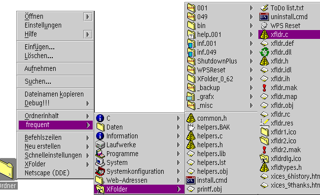

Ecco un esempio (la directory di sviluppo di "XFolder", sul disco rigido dell'autore):

Come si pu• vedere, Š visibile tutto ci• che Š contenuto nella cartella "XFolder"; le sottocartelle aprono ulteriori sottomenu.
I menu "Contenuto cartella" funzionano in maniera del tutto analoga allo &warpcenter;: cliccando su di una voce se ne apre la sua visualizzazione assunta. Cliccando su una voce di menu che rappresenta una cartella, si apre un nuovo sottomenu che ne mostra il contenuto; cliccando invece con il tasto 2 del mouse, la cartella WPS relativa viene aperta in una nuova finestra.
Le funzioni "Contenuto cartella" possono essere usate in due maniere.
Nell'immagine la si pu• vedere chiaramente, con il nome "Ordnerinhalt" (che Š la traduzione tedesca di "Contenuto cartella")
Queste voci di menu contestuale per le cartelle si possono attivare e disattivare comodamente dalla
prima pagina "Menu" nel nuovo oggetto "Workplace Shell".
Nell'immagine, il menu "frequent" mostra una cartella sulla mia Scrivania in cui ho riunito tutto ci• cui mi capita di accedere con frequenza e che ho dichiarato cartella "favorita": qualunque cosa io metta in questa cartella diventer… raggiungibile da tutti i menu contestuali.